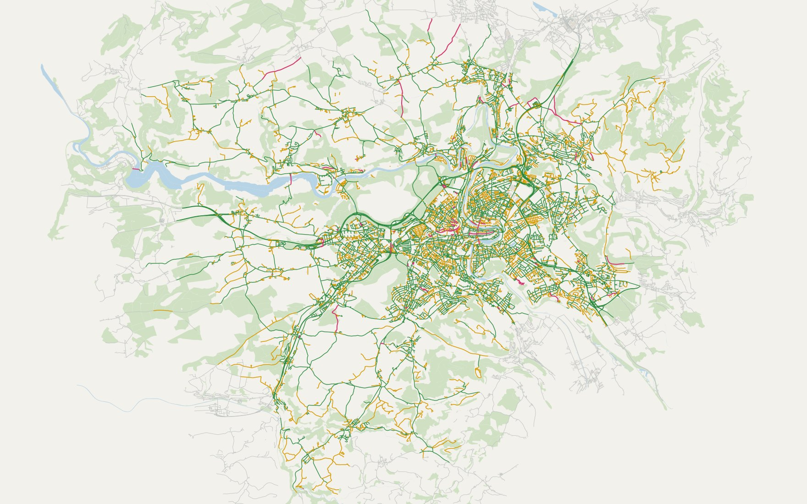

Welche Strasse ist für welches Fahrzeug physisch passierbar? BORS prüft für Notarzt, Rettungswagen und zwei Feuerwehrfahrzeuge, ob Breite, Höhe und Gewicht reichen, in Bern und zehn Nachbargemeinden. Die Breiten stammen aus der amtlichen Vermessung.
Jede Strasse erhält pro Fahrzeug einen von drei Zuständen. Geroutet wird zuerst nur über validierte Strassen; gibt es so keinen Weg, zeigt BORS eine gekennzeichnete Ausweichroute.
Mein Teil: die gesamte technische Umsetzung, von der Datenaufbereitung und Breitenmessung über den Router bis zur Web-App.